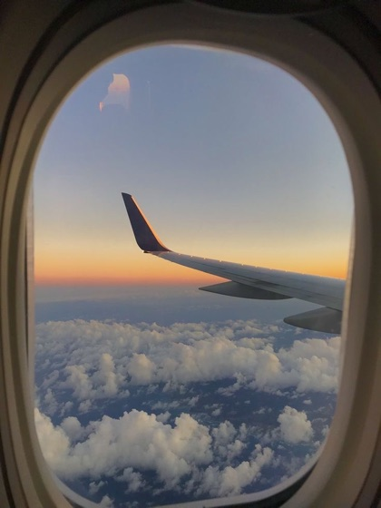
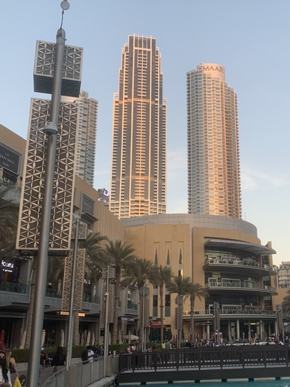
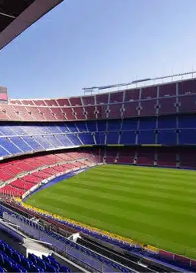
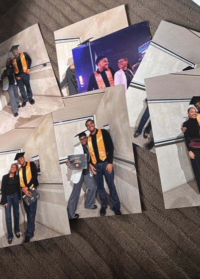
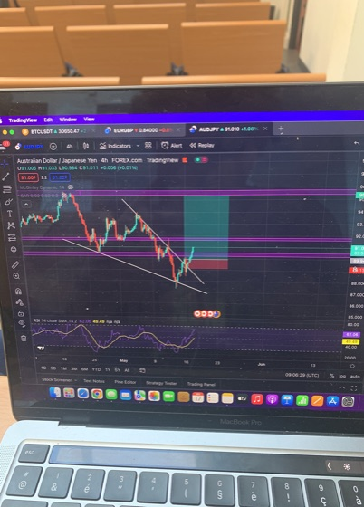
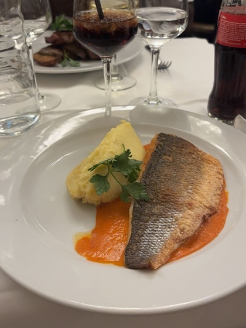
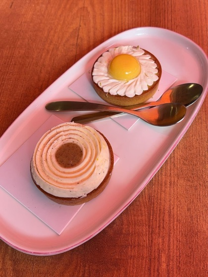

C'est Giovani.
Avec un seul « n ».
Tout le monde en rajoute un deuxième. Ce n'est pas grave, j'ai l'habitude.







Je suis designer UX/UI, mais pas seulement.
J'ai commencé par le code, je suis passé au design, et j'ai appris à piloter des projets entre les équipes créatives, techniques et métier. Aujourd'hui, je navigue entre ces trois mondes : je conçois une interface, je sais comment elle sera développée, et je sais comment la faire avancer jusqu'à sa mise en ligne.
J'ai travaillé sur des sites e-commerce, des outils métier, des interfaces tactiles et de nombreux lancements produit.
Mon profil
Ce qui me distingue, c'est de parler plusieurs langues : celle du designer, celle du développeur et celle du chef de projet.
Je peux passer d'un atelier avec les équipes métier à une maquette Figma, puis à l'intégration HTML/CSS, sans perdre le fil. Moins de choses se perdent en traduction, et ce que je dessine a plus de chances d'arriver jusqu'à l'utilisateur.
Ma façon de travailler
Je commence toujours par poser beaucoup de questions, puis par regarder les gens utiliser ce qui existe déjà. C'est souvent là que se cache le vrai problème.
Ensuite, je cartographie, je teste, je découpe. Et comme je sais ce que coûte une ligne de code, je conçois en pensant à ce qui peut être livré, pas seulement à ce qui ferait joli en présentation.
Quand je ne designe pas
J'essaie de comprendre le monde qui m'entoure : l'économie, les marchés financiers, la crypto, l'investissement. Comprendre comment l'argent circule, c'est aussi comprendre comment les gens décident.
Et puis il y a le FC Barcelone. Plus qu'un supporter, je suis socio du club. Je vis chaque match, souvent avec plus d'émotion que je ne voudrais l'admettre. Més que un club, comme on dit.
On en parle ?